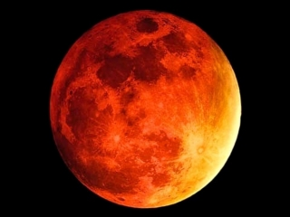

Un eclipse lunar es un evento astronómico que sucede cuando la Tierra se interpone entre el Sol y la Luna, generando un cono de sombra que oscurece a la Luna. Para que suceda un eclipse, los tres cuerpos celestes, la Tierra, la Luna y el sol; deben estar exactamente alineados o muy cerca de estarlo, de tal modo que la Tierra bloquee los rayos solares que llegan al satélite, por eso los eclipses lunares solo pueden ocurrir en la fase de luna llena.

Solo una parte de la
Luna es ocultada.
Toda la superficie lunar entra en
el cono de sombra terrestre.
La Luna entra en el cono
de penumbra de la Tierra.